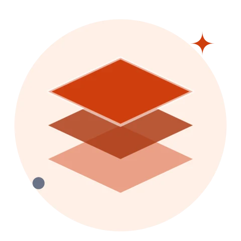
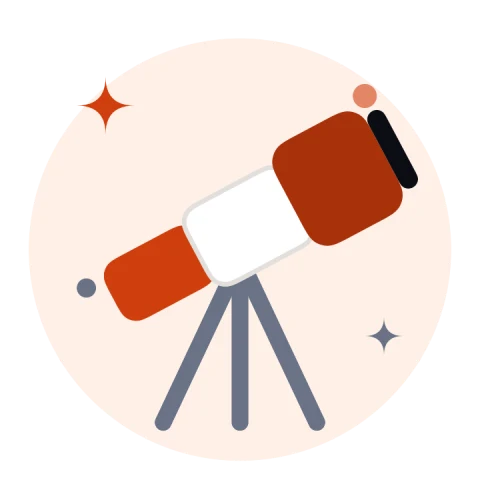

Help build NexLauncher.
It's Swift and SwiftUI, tested with Swift Testing, and every change is welcome: a bug report, a stack it should run, or a pull request.


Build it locally
You need macOS 26 and Xcode 26 (Swift 6.2).
git clone https://github.com/NiyonshutiDavid/NexLauncher.git
cd NexLauncher
swift test # the test suites
./build.sh # builds NexLauncher.app
./build.sh --install # copies it to /Applications and opens itbuild.sh signs with your first Apple Development identity and falls back to ad-hoc signing. Desktop widgets need a real signature to load.

Where things live
NexCore
Models, stack detection, scanning, settings and agent commands. No UI, most of the tests.
NexProcess
Starts services in their own process groups and stops them cleanly.
NexGit and NexTerminal
Git commands and parsing, and the embedded terminal built on SwiftTerm.
NexUI, NexLauncher and Widgets
SwiftUI views and the app model, the app entry point and menu bar, and the WidgetKit extension.

Good places to start
- Teach it a new stack. Add a case to
StackDetectorwith a test fixture inTests/NexCoreTests. - Richer agent output. Claude Code's progress is parsed into steps; Codex, Gemini CLI and Antigravity still stream plain text.
- Notarised builds. A release workflow that signs with Developer ID and notarises, so nobody has to use Open Anyway.
- Fix something that bugged you. If it got in your way, it probably gets in someone else's.
Before a pull request: run swift test, keep new logic in NexCore with tests, and add a screenshot for anything visual. The full guide is in CONTRIBUTING.md.

Ground rules
- NexLauncher never stores credentials. Git and AI agents keep their own sign-in.
- Text from projects, tasks or agents never goes into a shell command; pass it as an environment variable.
- Be kind in issues and reviews.